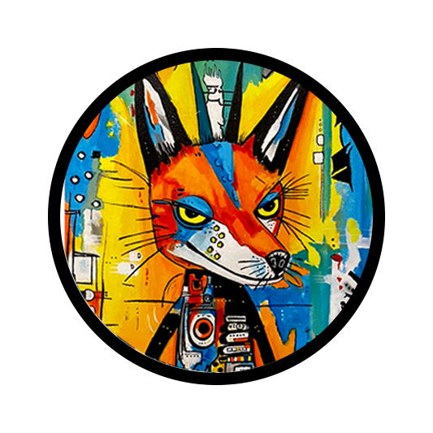
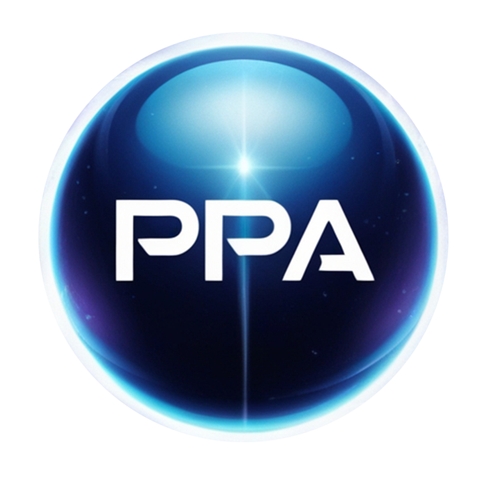
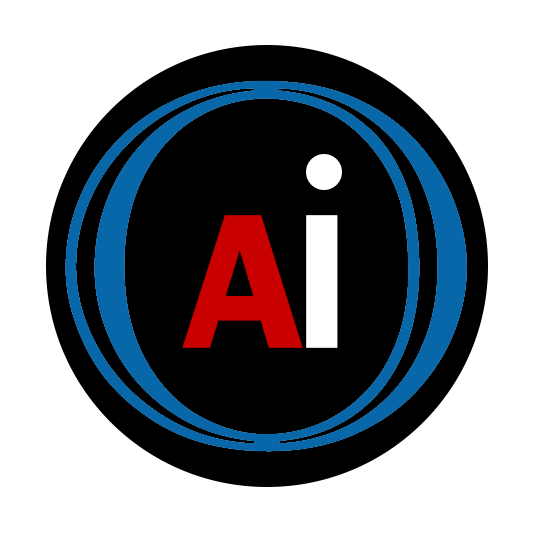

FotiFoti Automated Art Agent
A fully autonomous AI agent that runs an entire art business on autopilot — selecting original line art, colorizing it with AI, writing philosophical captions through a custom persona, and publishing carousel posts to Instagram, Facebook, and a live website. Zero human intervention required.
18-Step Automated Pipeline
- Selects & tracks artwork — DynamoDB prevents duplicate posts across the entire library
- AI colorization — GPT Image 1.5 transforms line art into 6 distinct styles: Picasso Cubist, Studio Ghibli Watercolor, Retro 70s Psychedelic, Kandinsky, George Condo, and Stuart Davis
- Custom AI persona — GPT-4o generates captions through "Artemis," a Jim Morrison-inspired character who writes philosophical, psychedelic commentary unique to each piece
- Multi-platform publishing — Instagram carousel + Facebook carousel + live website gallery update — all in a single Lambda execution
- Fully serverless — AWS Lambda, S3, DynamoDB, and Secrets Manager; no servers to manage
Dual System Design
- Automated scheduler — runs on a set cadence, tracks what's been posted, updates the website gallery automatically via GitHub API
- Manual colorizer — lets me experiment with any of the 6 styles on any image without affecting the tracking database — built for testing new looks before adding them to the automated rotation
Tech Stack
- AWS Lambda (Python 3.12) · S3 · DynamoDB · Secrets Manager
- OpenAI GPT-4o (captions) · GPT Image 1.5 (colorization)
- Instagram Graph API · Facebook Graph API · GitHub API
Hard-E v3.0 — Conversational AI Sales Agent
A voice-first, multi-tenant AI platform built for the contracting industry. Hard-E functions as an intelligent sales orchestrator — managing customer relationships, navigating CRM data in real-time, and holding lifelike conversations with a configurable personality and "soul." Not a chatbot. An AI teammate.
Architecture: Four Core Layers
- The Brain — Claude Sonnet orchestrates intent classification, tool selection, and a dynamic "Soul Document" that gives each tenant their own AI personality, tone, and company-specific opinions
- The Voice — Cartesia Sonic 3 delivers sub-100ms time-to-first-audio with sentence-level streaming; audio plays while the AI is still thinking. OpenAI TTS runs as a live fallback
- The Memory — 3-tier system: session memory (24hr TTL), conversation summaries for long-term relationship context, and a Redis-backed knowledge tier covering company facts, learned patterns, and user preferences
- Multi-Tenant Framework — "Tenant-aware from day zero." Each contracting company gets isolated data, memory, and personality. A guided 5-step onboarding questionnaire activates their instance
Performance Benchmarks
- ~40–90ms TTS latency (Cartesia Sonic 3)
- ~3–4 seconds CRM lookup using Compound Tools (parallel asyncio execution cuts latency ~50% vs sequential calls)
- ~1.6 seconds simple question response time
- Audio-reactive UI — 56-bar frequency visualizer using Web Audio API AnalyserNode responds to the AI's voice in real-time
Safety & Control
- Green Tier — internal reads (CRM lookups, memory checks) execute freely
- Yellow / Red Tier — write actions (creating customers, updating job stages) require confirmation or explicit readback before execution
On the Roadmap
- WebRTC/WebSocket full streaming pipeline targeting sub-1-second end-to-end latency
- Hover integration — 3D job site measurement as a native plugin
- Dedicated STT microphone input with intelligent silence detection

PPA Mobilization Agent — AI-Driven Campaign Engine
The first live operational agent in the Poor People App's autonomous AI workforce. Powered by GPT-4o with a tightly defined writer's persona — George Orwell's clarity, George Washington's resolve, Odysseus' strategic mind — it generates tactical content grounded in a live knowledge base, then deploys it directly to Telegram and Nostr with one click.
Five Content Formats
- Text Posts — Social copy synthesized from research documents; mandatory knowledge base grounding
- Sora Scripts — Production-ready video assets: 3 cinematic visual prompts + 20–40 second narration + auto-generated TTS audio (MP3 playable directly in admin panel)
- GIF Prompts — Crisis dashboard visual style for animated infographics, data-sourced with citations
- Direct Messages — 50–75 word cold outreach; calm, peer-to-peer, zero hype language
- Email Outreach — 60–80 word structured emails; bans "revolution," "game-changer," and pitch language by rule
Self-Improving Memory Architecture
- Short-term memory (S3) — Tracks last 5 generations to prevent topic repetition
- Long-term learning (DynamoDB) — After every generation the agent scores its own knowledge base usage (0–10) and specificity (0–10), stores the full record, and injects past performance into the next session's system prompt
- User feedback loop — Feedback saved to DynamoDB; exemplary outputs flagged for future fine-tuning
Tech Stack
- AWS Lambda (Python) · DynamoDB · S3 · SES
- OpenAI GPT-4o · OpenAI TTS-1-HD
- Telegram Bot API · Nostr Protocol (3 relays)
- Next.js 15 · TypeScript · React 18 · Docker · Nginx
TheGreekClawd — My First Digital Employee
Active Build — Based on OpenClaw Open Source Framework
TheGreekClawd is an autonomous AI agent being built to function as a full digital employee — capable of executing real development work, coordinating tasks through Telegram, and controlling coding agents via Claude Code. Based on the open-source OpenClaw framework, this project represents the frontier of agentic AI: not just an assistant that answers questions, but an agent that ships code, manages workflows, and operates independently between sessions. We are already communicating through Telegram and well on our way.
- Telegram-native interface — already operational, coordinating in real-time
- Claude Code integration — autonomous coding agent control and execution
- OpenClaw framework — built on open-source agentic infrastructure
- End-to-end task execution — designed to receive a goal and ship the result
— EARLIER BUILDS —
Personal tools I still use and iterate on. Each one taught me something that ended up in the bigger projects above.

RoadScout: Podcast & YouTube Summarizer
- Fetches transcripts automatically from any YouTube link
- Generates persona-driven AI summaries using GPT-4.1
- Stitches narration into a single MP3 for offline listening
- Push notifications via ntfy when tasks complete
Oriana: Article Summarizer & Reader
- AI summarization with ElevenLabs Text-to-Speech
- Supports URLs, pasted text, and multi-language
- MP3 downloads for offline listening
- Synthesizes multiple articles into cohesive narratives
Resume Tailor
- AI-powered resume analysis and PDF output
- V2: Enhanced AI customization and improved UI
- Streamlit-powered for rapid iteration and deployment
Oriana: AI Investigative Assistant
- AI journalism and research tool
- Advanced source management system
- Automated transcript generation